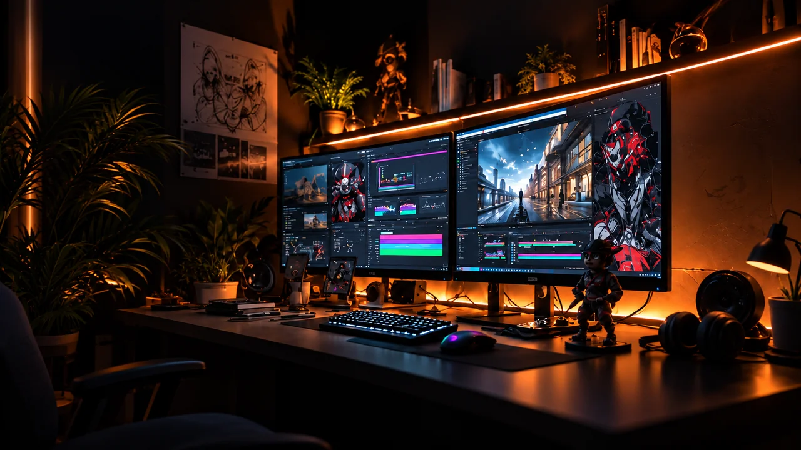

Creative portfolio
GoodDesignBuildsOpportunities.
Graphic design, presentation design, motion graphics,
video editing, 3D experiences, and more.
The creative playground
01 / EXPLOREIdeas made
visible.
Six disciplines. One visual language.
A gallery of concept studies, from the first
bold idea to the smallest detail.
Showing all 6 concept studies.
Concept imagery created for this portfolio preview. Motion and video entries are still-image studies.
What I create
02 / SERVICESDifferent tools.
Same intent.
Make the message clear.
Make the experience memorable.
01Graphic design
A strong visual identity, from a single striking graphic to a cohesive collection of branded materials.
02Presentation design
Give your ideas a clear narrative, thoughtful hierarchy, and a visual rhythm that keeps the story moving.
03Motion graphics
Bring static ideas to life through purposeful movement, expressive typography, and engaging visual sequences.
04Video editing
Shape footage into a story with pacing, transitions, color, and sound that work together.
053D / Web experiences
Explore ideas in depth, from spatial visualizations to interactive web experiences with a distinct point of view.
06Illustration
Give a story its own visual world through expressive characters, bold compositions, and considered detail.

THE CREATIVE SPACEBehind the visuals
One vision.
Many ways
to create.
CLWNPRNT is a space for creative visual storytelling — where design, motion, and digital experiences meet.
The approach is simple: start with the idea, find the right visual language, and give every detail a purpose.
Your next great idea
04 / LET’S TALK